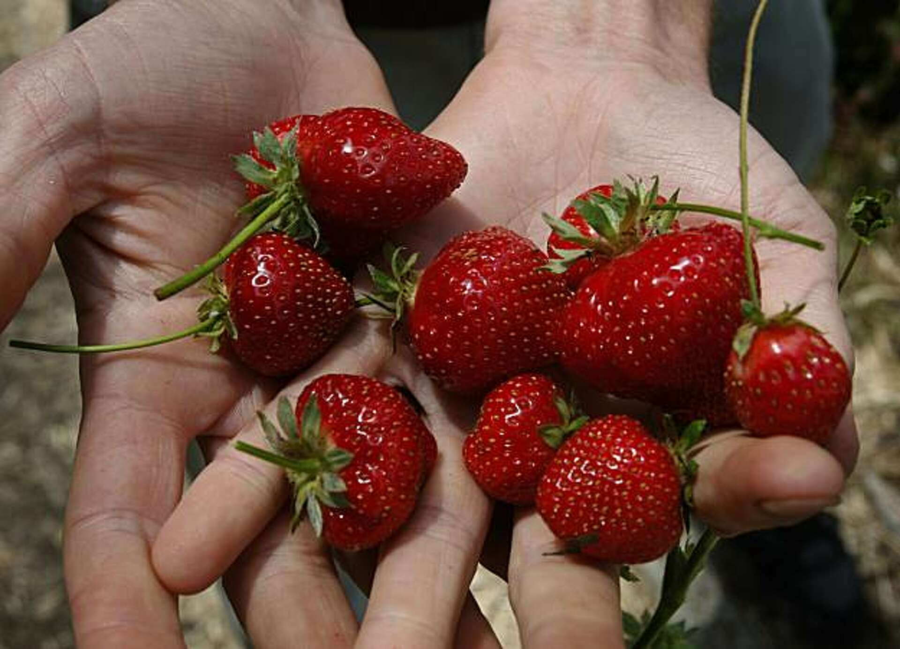
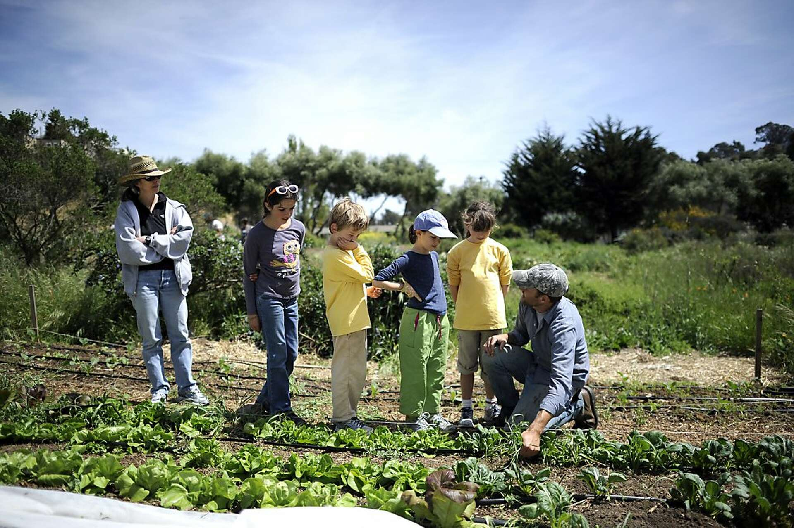

May 9, 2026
Introduction to Urban Beekeeping
A two-hour class at Alemany Farm covering bee biology, colony health, honey production, and urban beekeeping basics.
Workshops at Alemany Farm are open to the public and share practical knowledge about plants, food, ecology, and urban growing.

May 9, 2026
A two-hour class at Alemany Farm covering bee biology, colony health, honey production, and urban beekeeping basics.
April 12, 2026
A workshop focused on San Francisco native plants, local microclimates, and growing habits, with a plant to take home.
Donation-Based
No one is turned away for lack of funds, helping the workshops stay accessible to the wider community.

Recent workshop topics include beekeeping, native plants, fruit tree pruning, water gardening, medicinal plants, bird walks, soil health, and gardening basics.
Most workshops ask guests to register in advance and make a suggested donation if they are able.